Acerca de nosotros
En ZooPark, nuestra misión es educar y concienciar sobre la vida silvestre y la conservación de especies. Nuestro zoológico alberga una variedad de animales de diferentes hábitats, proporcionando un espacio seguro y enriquecido para su bienestar. Creemos en la importancia de preservar la biodiversidad y trabajamos arduamente para ofrecer a nuestros visitantes una experiencia única que inspire amor y respeto por la naturaleza.
Para mas informacion
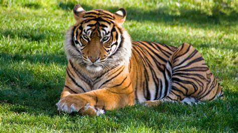
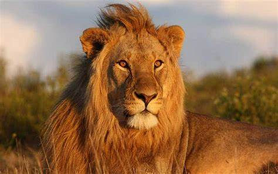
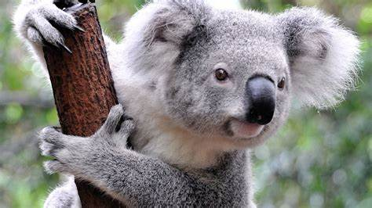
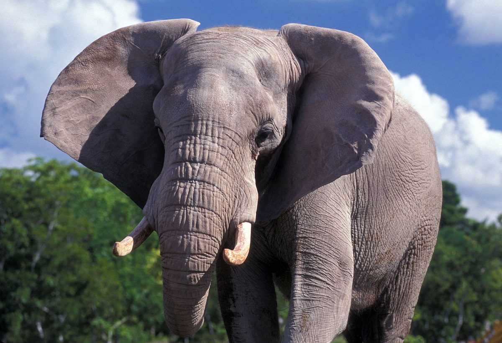
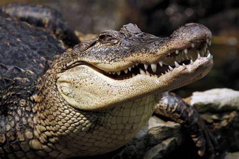
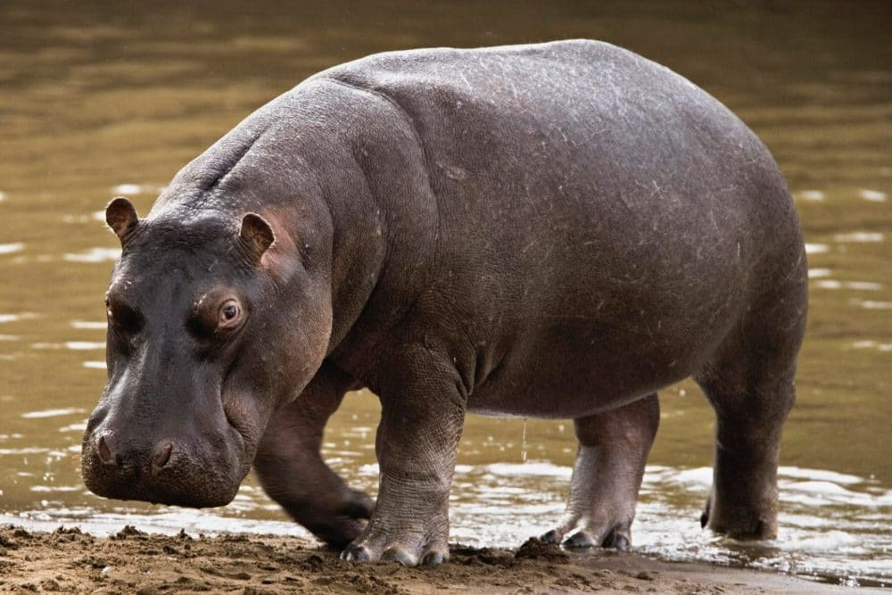
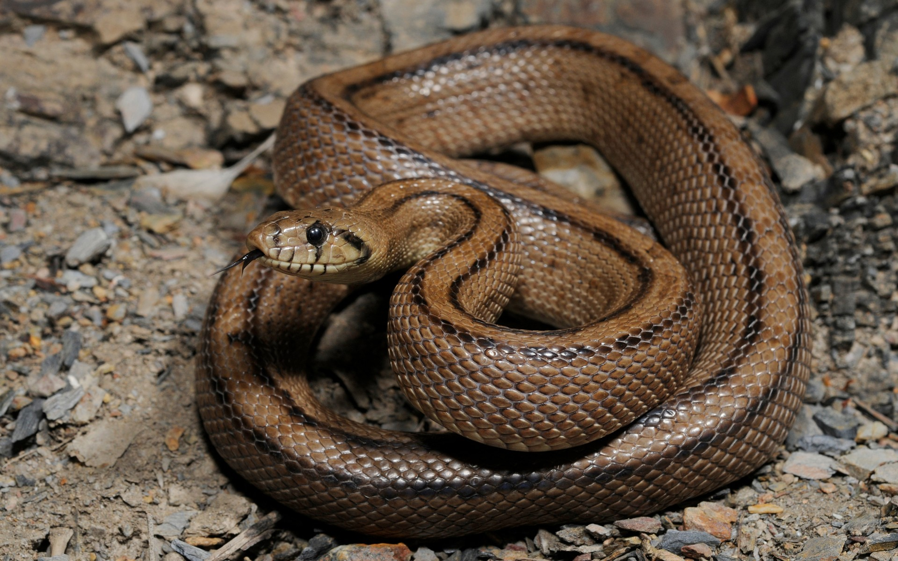

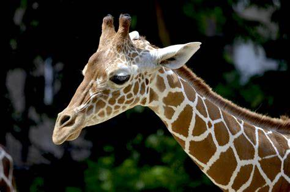
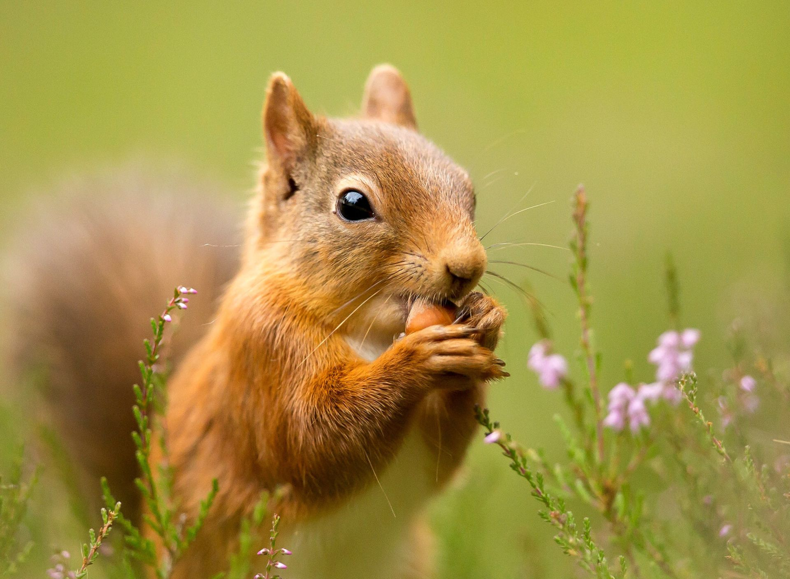
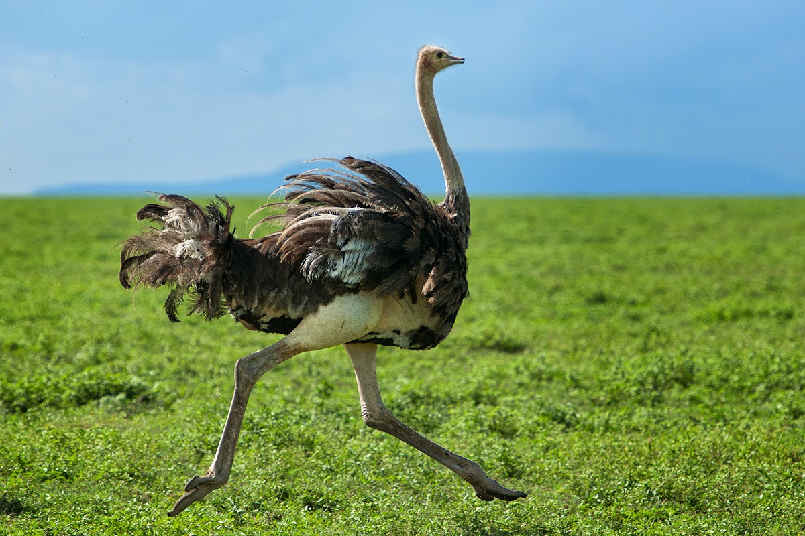
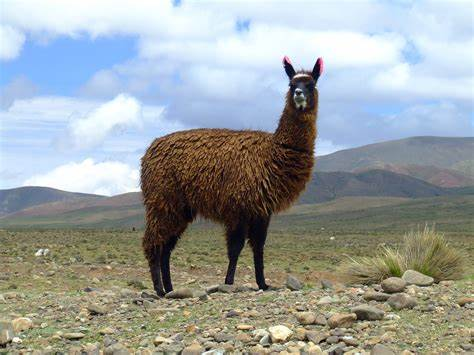